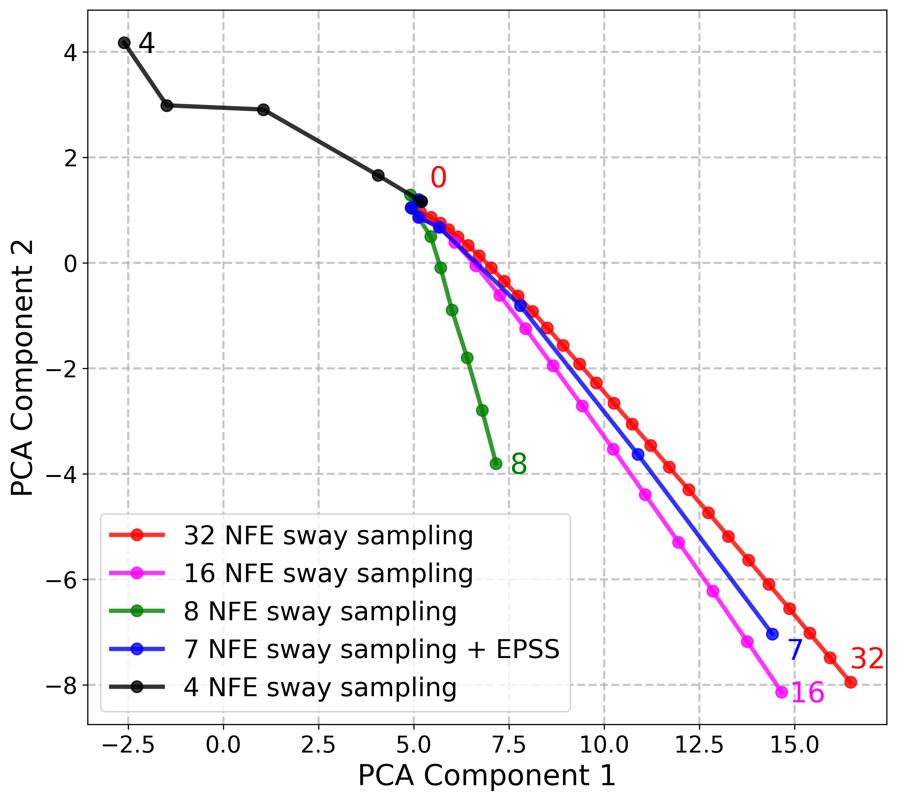

Fast F5-TTS
Accelerating Flow-Matching-Based Text-to-Speech via Empirically Pruned Step Sampling
Anonymous
Abstract Flow-matching-based text-to-speech (TTS) models, such as Voicebox, E2 TTS, and F5-TTS, have attracted significant attention in recent years. These models require multiple sampling steps to reconstruct speech from noise, making inference speed a key challenge. Reducing the number of sampling steps can greatly improve inference efficiency. To this end, we introduce Fast F5-TTS, a training-free approach to accelerate the inference of flow-matching-based TTS models. By inspecting the sampling trajectory of F5-TTS, we identify redundant steps and propose Empirically Pruned Step Sampling (EPSS), a non-uniform time-step sampling strategy that effectively reduces the number of sampling steps. Our approach achieves a 7-step generation with an inference RTF of 0.030 on an NVIDIA RTX 3090 GPU, making it 4 times faster than the original F5-TTS while maintaining comparable performance. Furthermore, EPSS performs well on E2 TTS models, demonstrating its strong generalization ability.
Contents
This page is for research demonstration purposes only.
Method Overview

Figure 1: PCA visualization of the 100-dimensional sampling trajectory during the F5-TTS inference process of Mel spectrogram. With our Empirically Pruned Sway Sampling (EPSS), the 7-NFE sampling trajectory is close to the 32-NFE one from F5-TTS baseline.
All samples in this demo page are generated with F5-TTS (CFG=2, w/ Sway Sampling, Euler ODE Solver), with pretrained Vocos as vocoder.
Zero-shot Generation
Prompt and text from the demo page of Seed-TTS.
| Language | Prompt | Text to Generate | Fast F5-TTS (7 NFE) | F5-TTS (32 NFE) |
|---|---|---|---|---|
| EN | I don't really care what you call me. I've been a silent spectator, watching species evolve, empires rise and fall. But always remember, I am mighty and enduring. | |||
| Perhaps they are driven by the delicious blend of flavors, or it could be the appealing visual presentation. At the end of the day, our choices in food reflect our personal preferences and sometimes, even our lifestyle or belief system. | ||||
| Your safety and the pack's reputation are at stake. Your bravery is admirable, but sometimes bravery is knowing when to retreat. Please, consider returning with me. We can work out a plan, but only if you're willing to listen. | ||||
| ZH | 突然，身边一阵笑声。我看着他们，意气风发地挺直了胸膛，甩了甩那稍显肉感的双臂，轻笑道："我身上的肉，是为了掩饰我爆棚的魅力，否则，岂不吓坏了你们呢？" | |||
| 顿时，气氛变得沉郁起来。乍看之下，一切的困扰仿佛都围绕在我身边。我皱着眉头，感受着那份压力，但我知道我不能放弃，不能认输。于是，我深吸一口气，心底的声音告诉我：“无论如何，都要冷静下来，重新开始。” | ||||
| 皇上的面色未变，宛如雕塑般静止，他的眼中闪过一丝动人的温度。他深深地看了那位忠心耿耿的臣子一眼，终于开口：“诺，我会再考虑考虑的。”他的声音低沉且坚定，留下空气中隐隐的无奈与柔情。 |
NFE Comparison
This table shows the sampling time-step schedules for different NFEs in Fast F5-TTS and F5-TTS. The black dots illustrate the location of sampling timesteps. All the audios are generated given the same prompt and text. EPSS stands for Empirical Pruned Step Sampling and SS stands for Sway Sampling.
| NFE | Proposed Fast F5-TTS | F5-TTS Sway Sampling or Uniform Sampling | ||
|---|---|---|---|---|
| 5 | ||||
| 6 | ||||
| 7 | ||||
| 10 | ||||
| 12 |

|
|||
| 16 | ||||